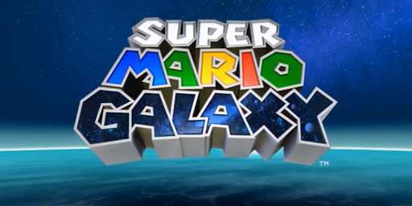
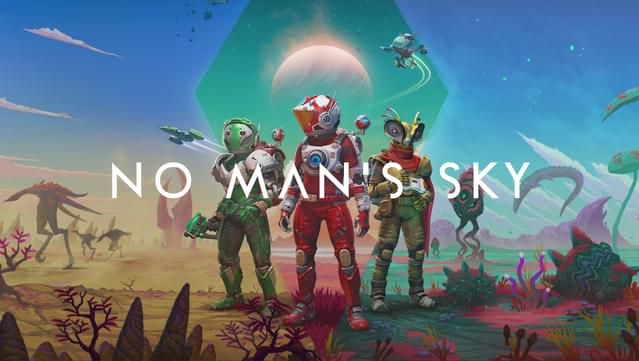
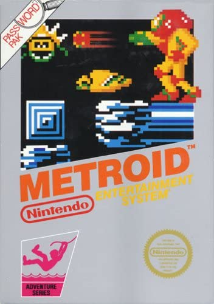

Les articles :
|  |
I- Une image enfantine de l'espace Dès que l’on évoque le thème de l’espace dans les jeux-vidéos, plusieurs titres nous viennent directement à l’esprit. Parmi tous ceux-là, un se démarque des autres : Super Mario Galaxy... |
|  |
II- L'univers : entre beauté infinie et taille gargantuesque Cependant, l’espace ne sert pas juste à rêver, il est aussi représenté par son immensité et sa diversité. Rien que le nombre de galaxies, de planètes, ou de systèmes suffit à nous donner mal à la tête... |
|  |
III- L'espace, un enfer pour l'Homme Nous avons abordé dans les articles précédents le côté rêveur et enfantin de l’espace qu’évoquent certains titres ainsi que son immensité et sa diversité. Cependant, il ne faut pas oublier que l’espace est aussi un milieu hostile, froid |

|
IV- Mentions honorables Le jeu-vidéo est un média extrêmement diversifié, et nous avons pu parler que d’un nombre très limité de jeux dans ces trois articles. C’est pourquoi voici quelques titres que nous n’avons pas pu caler, mais que nous souhaitions tout de même vous faire partager ! |